When you complete this learning material, you will be able to:
Explain piping system design, inspection, and maintenance.
You will specifically be able to complete the following tasks:
Explain selection criteria for piping materials.
The selection of materials for piping applications is a process that requires consideration of material characteristics appropriate for the required service. Materials are suitable for the flow medium and the given operating conditions of temperature and pressure safety during the intended design life of the product. Mechanical strength must be factored in for long term service and the resistance to operational variables such as thermal or mechanical cycling.
Extremes in the process temperatures influence the material capabilities ranging from:
The operating environment surrounding the pipe or piping components must be factored into the design. Corrosion and erosion can cause degradation of the properties of the material. The products that are contained in the piping are also an important factor.
The following properties contribute to the attractiveness and economy of a given pipe material:
The piping used must be of the correct size in order to provide the required flow and must have sufficient strength to withstand the pressure and temperature of the fluid being transferred. In addition to this, the piping system must include provision for expansion and contraction, proper support, insulation and drainage.
The design, manufacture, testing and installation of power piping systems for steam plants is covered in the ASME Code B 31.1 “Power Piping” and in the ASME Code Section I “Power Boilers.”
Steels are the most frequently used materials for power piping systems. The general classifications or steels are:
Table 1A in the ASME Code Section II, Part D, lists the allowable stress values for these materials for various temperatures up to 815°C.
Low carbon steel is the lowest priced steel and it is used extensively for steam, water, fuel oil and compressed air piping for temperatures below 400°C. Above 400°C, it is not recommended as graphitization may occur within the pipe material at these elevated temperatures. Graphitization is the breaking down of steel into iron and carbon graphite. Failure of the material occurs along lines where there is a concentration of graphite.
Pipe made from low carbon steel is seamless electric resistance welded or butt welded. Specification numbers of some examples of low carbon steel pipe, as listed in Table 1A, are: SA-53B, SA-106B and SA-135A.
Alloy steels, such as the chrome-molybdenum types, are used for temperatures above 400°C. An application would be for use in the central boiler station steam piping at 540°C or more. Superheaters are normally made from chrome molybdenum tubes and headers. The uses of some types, such as 1 chromium ½ molybdenum or 1¼ chromium ½ molybdenum where graphitization can be a problem, are limited to 525°C. 2¼ chromium 1 molybdenum (or higher % chrome alloys up to 9Cr-1Mo) is usually used above 460°C.
Alloy steel pipe may be seamless or welded and some examples, as listed in Table 1A, are: SA-213T12, SA-335P11 and SA-423-2.
Austenitic stainless steels are a special class of high alloy steels which range from 18% chrome - 8 % nickel to 25% chrome - 12% nickel. They are also alloyed with chromium, molybdenum and sometimes with copper, titanium, niobium and nitrogen. Alloying with nitrogen raises the yield strength of the steels.
They are highly resistant to corrosion and maintain high strength at high temperatures. This piping is available as seamless or welded pipe and tubing. Applications are high temperature loop tubes in once-through boilers.
Some specification numbers as listed in Table 1A of ASME Section II Material Specifications (also Table PG-23.1 of the ASME Section I Code Extract) are:
Materials other than steel which may be used in power plant piping are cast iron and nonferrous materials such as copper and brass. However, these materials are limited by the code in regard to pressure and temperature.
According to the ASME Code Section I, cast iron can be used for steam pressures up to 1725 kPa providing the steam temperature does not exceed 230°C, but in no case, can be used for boiler blowoff connections. Cast iron is not used where shock loading may occur.
The ASME Code Section I also specifies that nonferrous pipe or tubes shall not be used for blow-off piping or for any other service where the temperature exceeds 210°C. In cases where the use of nonferrous materials (any metal other than iron and its alloys such as aluminium, copper or copper nickel) is allowed, there is a possibility of galvanic corrosion occurring when these materials are used in conjunction with steel or other metals. The galvanic corrosion occurs where the dissimilar metals come in contact.
Calculate the required thickness and maximum allowable working pressure of piping.
Commercial pipe is made in standard sizes with different wall thicknesses or weights. Up to and including 300 mm pipe, the size is expressed as nominal (approximate) inside diameter. Above 300 mm, the size is given as the actual outside diameter.
For example, if a pipe was designated as 152 mm size this would mean that it has a nominal or approximate inside diameter of 152 mm. The outside diameter is 168 mm and this is a constant value no matter what the wall thickness is. The actual inside diameter of the pipe will depend upon its wall thickness. For a standard wall thickness, the actual inside diameter of 152 mm pipe is 154 mm. For an extra strong wall thickness, the actual inside diameter is 146 mm.
There are two systems used to designate the various wall thicknesses of different sizes of pipe. The older method lists pipe as standard (S), extra strong (XS) and double extra strong (XXS). The newer method, which is superseding the older method, uses schedule numbers to designate wall thicknesses. These numbers are: 10, 20, 30, 40, 60, 80, 100, 120, 140 and 160. In most sizes of pipe;
Table 1 lists the dimensions and the mass per metre of different sizes of steel pipe with varying wall thicknesses.
Table 1
Dimensions and Masses of Steel Pipe
| Nom. pipe size imp. units | Equiv. nom. pipe size MM | Outside diam. | SCHEDULE | ||||||||||||
|---|---|---|---|---|---|---|---|---|---|---|---|---|---|---|---|
| 10 | 20 | 30 | Std. wall | 40 | 60 | Extra strong | 80 | 100 | 120 | 140 | 160 | Double Extra strong | |||
| 1/2 | 12.70 | 21.34 | ---- | ---- | ---- |
2.77
1.26 |
2.77
1.26 |
---- |
3.73
1.61 |
3.73
1.61 |
---- | ---- | ---- |
4.75
1.92 |
7.47
2.53 |
| 3/4 | 19.05 | 26.67 | ---- | ---- | ---- |
2.87
1.67 |
2.87
1.67 |
---- |
3.91
2.17 |
3.91
2.17 |
---- | ---- | ---- |
5.54
2.87 |
7.82
3.61 |
| 1 | 25.4 | 33.40 | ---- | ---- | ---- |
3.38
2.48 |
3.38
2.48 |
---- |
4.55
3.21 |
4.55
3.21 |
---- | ---- | ---- |
6.35
4.20 |
9.09
5.41 |
| 1 1/4 | 31.75 | 42.16 | ---- | ---- | ---- |
3.56
3.36 |
3.56
3.36 |
---- |
4.85
4.43 |
4.85
4.43 |
---- | ---- | ---- |
6.35
5.57 |
9.70
7.70 |
| 1 1/2 | 38.10 | 48.26 | ---- | ---- | ---- |
3.68
4.02 |
3.68
4.02 |
---- |
5.08
5.37 |
5.08
5.37 |
---- | ---- | ---- |
7.14
7.18 |
10.16
9.47 |
| 2 | 50.80 | 60.33 | ---- | ---- | ---- |
3.91
5.39 |
3.91
5.39 |
---- |
5.54
7.42 |
5.54
7.42 |
---- | ---- | ---- |
8.71
11.00 |
11.07
13.35 |
| 2 1/2 | 63.50 | 73.03 | ---- | ---- | ---- |
5.16
8.56 |
5.16
8.56 |
---- |
7.01
11.32 |
7.01
11.32 |
---- | ---- | ---- |
9.53
14.79 |
14.02
20.25 |
| 3 | 76.20 | 88.90 | ---- | ---- | ---- |
5.49
11.20 |
5.49
11.20 |
---- |
7.62
15.15 |
7.62
15.15 |
---- | ---- | ---- |
11.13
21.16 |
15.24
27.46 |
| 3 1/2 | 88.90 | 101.60 | ---- | ---- | ---- |
5.74
13.46 |
5.74
13.46 |
---- |
8.08
18.49 |
8.08
18.49 |
---- | ---- | ---- | ---- |
16.15
33.77 |
| 4 | 101.60 | 114.30 | ---- | ---- | ---- |
6.02
15.95 |
6.02
15.95 |
---- |
8.56
22.14 |
8.56
22.14 |
---- |
11.13
28.10 |
---- |
13.49
33.27 |
17.12
40.70 |
| 5 | 127.00 | 141.30 | ---- | ---- | ---- |
6.55
21.61 |
6.55
21.61 |
---- |
9.53
30.71 |
9.53
30.71 |
---- |
12.70
39.97 |
---- |
15.88
48.71 |
19.05
56.98 |
| 6 | 152.40 | 168.28 | ---- | ---- | ---- |
7.11
28.04 |
7.11
28.04 |
---- |
10.97
42.23 |
10.97
42.23 |
---- |
14.27
53.78 |
---- |
18.24
66.95 |
21.95
78.57 |
| 8 | 203.20 | 219.08 | ---- |
6.35
33.05 |
7.04
36.51 |
8.18
42.20 |
8.18
42.20 |
10.31
52.68 |
12.70
64.13 |
12.70
64.13 |
15.06
75.18 |
18.24
89.61 |
20.62
100.15 |
23.01
110.39 |
22.23
111.47 |
| 10 | 250.40 | 273.05 | ---- |
6.35
41.44 |
7.80
50.61 |
9.27
59.83 |
9.27
59.83 |
12.70
80.91 |
12.70
80.91 |
15.06
95.08 |
18.24
113.17 |
21.41
131.84 |
25.40
153.90 |
28.58
170.93 |
---- |
| 12 | 304.80 | 323.85 | ---- |
6.35
49.34 |
8.38
64.69 |
9.53
73.25 |
10.31
79.16 |
14.27
108.13 |
12.70
96.69 |
17.45
130.82 |
21.41
158.44 |
25.40
185.47 |
28.58
206.45 |
33.32
236.88 |
---- |
| 14 | 355.60 | 355.60 |
6.35
54.26 |
7.92
67.52 |
9.53
80.65 |
9.53
80.65 |
11.13
93.66 |
15.06
125.50 |
12.70
106.55 |
19.05
156.86 |
23.80
193.22 |
27.76
222.69 |
31.75
251.59 |
35.71
279.52 |
---- |
| 16 | 406.40 | 406.40 |
6.35
62.15 |
7.92
77.39 |
9.53
92.49 |
9.53
92.49 |
12.70
122.33 |
16.66
158.89 |
12.70
122.33 |
21.41
201.69 |
26.19
243.62 |
30.94
284.20 |
36.53
330.33 |
40.46
362.27 |
---- |
| 18 | 457.20 | 457.20 |
6.35
70.04 |
7.92
87.25 |
11.13
121.28 |
9.53
104.33 |
14.27
154.82 |
19.05
204.22 |
12.70
138.12 |
23.80
252.37 |
29.36
307.36 |
34.93
360.84 |
39.67
405.31 |
45.24
455.98 |
---- |
| 20 | 508.00 | 508.00 |
6.35
77.93 |
9.53
116.17 |
12.70
153.90 |
9.53
116.17 |
15.06
181.66 |
20.62
245.94 |
12.70
153.90 |
26.19
308.71 |
32.54
378.52 |
38.10
438.03 |
44.45
504.15 |
49.99
560.18 |
---- |
| 24 | 609.60 | 609.60 |
6.35
93.72 |
9.53
139.85 |
14.27
208.10 |
9.53
139.85 |
17.45
252.99 |
24.59
341.33 |
12.70
185.74 |
30.94
438.02 |
38.89
543.02 |
46.02
634.64 |
52.37
714.07 |
59.51
800.99 |
---- |
| 30 | 762.00 | 762.00 |
8.03
117.40 |
12.70
232.83 |
15.88
289.81 |
9.53
175.36 |
---- | ---- |
12.70
232.83 |
---- | ---- | ---- | ---- | ---- | ---- |
Note: Upper figures in each square denote wall thickness in mm
Lower figures denote mass per metre in kilograms
The strength of a pipe depends upon:
To determine the maximum wall thickness necessary for a pipe to withstand a certain pressure and temperature, the following formula from the B-31.1 Power Piping Code, Paragraph 104.1.2 (Straight Pipe under Internal Pressure) is used. This is essentially the same formula as given in the ASME Code Section I PG-27.2.2.
$$ t_m = \frac{P D_o}{2SE + 2YP} + A \text{ where} $$
\( t_m \) = Minimum required wall thickness in millimetres. (As pipe manufacturing processes do not produce absolutely uniform wall thicknesses, the value of \( t_m \) as determined by the formula is usually increased by 12.5% to provide a manufacturing tolerance).
\( P \) = Maximum Allowable Working Pressure (MPa)
\( D_o \) = Outside diameter of pipe in millimetres
\( SE \) = Maximum allowable stress value in MPa at the operating temperature as listed in Tables A-1 and A-2 in the Power Piping Code or in Table 1A in the ASME Code Section II, Part D. The stress values in these tables take into account the efficiency of the longitudinal seam of welded pipe. (See Notes 7, 8 and 9 at the end of Table PG-23.1)
\(
A
\)
= Allowance for threading and structural stability, millimetres
Threaded steel or nonferrous pipe
19 mm nominal and smaller,
\(
A = 0.065
\)
25 mm nominal and larger,
\(
A =
\)
depth of thread
Plain end steel or nonferrous pipe
89 mm size and smaller,
\(
A = 0.065
\)
102 mm size and larger,
\(
A = 0.000
\)
(Plain end pipe is that which does not have its wall thickness reduced when joining to another pipe. For example, pipe lengths welded together rather than joined by threading)
\( y \) = Temperature coefficient having values as given in Table 2
Table 2
Values of
\(
y
\)
|
Temperature
\( ^{\circ}\text{C} \) |
482
and below |
510 | 538 | 566 | 593 |
621
and above |
|---|---|---|---|---|---|---|
|
Ferritic
Steels |
0.4 | 0.5 | 0.7 | 0.7 | 0.7 | 0.7 |
|
Austenitic
Steels |
0.4 | 0.4 | 0.4 | 0.4 | 0.5 | 0.7 |
For \( y \) values between the temperatures listed in Table 2, interpolation may be used.
Calculate the required thickness for 304.8 mm nominal size plain end steam pipe to operate at 10 250 kPa and \( 510^{\circ}\text{C} \) . The material is seamless alloy steel SA-335P12.
$$ t_m = \frac{P D_o}{2(SE + P_y)} + A $$
$$ P = 10.25 \text{ MPa (given)} $$
$$ D_o = 323.85 \text{ mm (Table 1)} $$
$$ SE = 73.8 \text{ MPa (Table 1A in the ASME Code Section II, Part D)} $$
$$ y = 0.508 \text{ (Table 2 – Ferritic steel by interpolation)} $$
$$ A = 0.000 \text{ (See previous page for 102 mm and larger pipe size)} $$
$$ t_m = \frac{10.25 \times 323.85}{2(73.8 + 10.25 \times 0.508)} + A $$
$$ t_m = \frac{3319.46}{2(79.01)} + 0 $$
$$ t_m = \frac{3319.46}{158.02} + 0 $$
$$ t_m = 21.01 + 0 $$
$$ t_m = 21.01 \text{ mm} $$
Using a manufacturer's tolerance allowance of 12.5%, the required wall thickness is:
$$ = 21.01 \times 1.125 $$
$$ = 26.26 \text{ mm (Ans.)} $$
To calculate the value of \( P \) for a given value of \( t_m \) , the formula is transposed to solve for \( P \) as follows:
$$ P = \frac{2 SE (t_m - A)}{D_o - 2y (t_m - A)} $$
Calculate the maximum allowable working pressure, in MPa, for a 203.2 mm nominal size plain end steam pipe with a minimum thickness of 18.24 mm. The average operating temperature is 510°C. The pipe material is a Ferritic steel SA-213-T11.
Where:
$$ t_m = 18.24 \text{ mm} $$
$$ D_o = 219.08 \text{ mm (Table 1)} $$
$$ SE = 78.60 \text{ MPa (Table 1A in the ASME Code Section II, Part D)} $$
$$ y = 0.508 \text{ (Table 2 by interpolation for 510°C)} $$
$$ A = 0.000 \text{ (See previous page)} $$
$$ \begin{aligned} P &= \frac{2 SE (t_m - A)}{D_o - 2y (t_m - A)} \\ &= \frac{2 \times 78.6(18.24 - 0)}{219.08 - 2 \times 0.508(18.24 - 0)} \\ &= \frac{2 \times 78.6(18.24)}{219.08 - 2 \times 0.508(18.24)} \\ &= \frac{2 \times 1346.11}{219.08 - 2 \times 9.27} \\ &= \frac{2692.22}{219.08 - 18.54} \\ &= \frac{2692.22}{200.84} \\ &= 13.42 \text{ MPa (Ans.)} \end{aligned} $$
Describe typical inspection procedures for piping installations and repairs.
Whenever new piping is installed or repairs are made to existing piping, the piping is tested to ensure it will withstand its maximum allowable operating pressure. The majority of piping is joined together with welding. The welding process may cause a number of defects which include the following:
Various methods of non-destructive examination (NDE) are used to discover these defects. NDE is the testing of materials without destroying the integrity of the material or lowering its ability to perform its primary function. These tests include:
Visual inspection is the most cost-effective method, but it must take place prior to, during and after welding. The ANSI/AWS D1.1, (American National Standards Institute/American Welding Society) Structural Welding Code-Steel, states, "Welds subject to non-destructive examination shall have been found acceptable by visual inspection." Before the first welding arc is struck, materials are examined to see if they meet specifications for quality, type, size, cleanliness and freedom from defects. Grease, paint, oil, oxide film or heavy scales are removed.
The pieces to be joined are examined for:
Process and procedure variables are verified, including electrode size and type, equipment settings and provisions for preheat or postheat. All of these precautions apply regardless of the inspection method used. During fabrication, visual examination of a weld bead and the end crater may reveal problems such as cracks, inadequate penetration, and gas or slag inclusions.
On simple welds, inspecting at the beginning of each operation and periodically as work progresses is adequate. However, where more than one layer of filler metal is deposited, each layer is inspected before depositing the next. The root pass of a multipass weld is the most critical for weld soundness. It is especially susceptible to cracking, and because it solidifies quickly, it may trap gas and slag. On subsequent passes, conditions the shape of the weld bead causes or changes in the joint configuration can cause further cracking as well as undercut and slag trapping.
After welding, visual inspection detects a variety of surface flaws, including cracks, porosity and unfilled craters regardless of subsequent inspection procedures.
Magnetic particle testing (MT) is used to detect surface or subsurface flaws. An electric current produces a magnetic flux that attracts magnetic particles to the cracks in the metal. In the presence of discontinuities, the magnetic flux in a material is distorted. This distortion is a function of the orientation of the discontinuity to the magnetic field (flux lines). The distortion is greatest when the discontinuity is perpendicular to the magnetic field. When distortion of the magnetic field is great enough, a pair of magnetic poles that act as small magnets, are established at the discontinuity.
Fig. 1(a) shows how magnetic particle testing is used to locate cracks in ferromagnetic materials. Magnetic particles are attracted to the poles and gather at the crack, Fig. 1(b), indicating a surface or subsurface flaw. This technique can only be applied on ferromagnetic materials. Magnetic particle testing is often used for finding cracks in piping, vessels, and the storage tanks of deaerators.
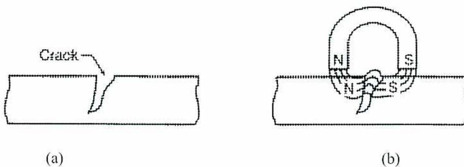
Figure 1
Magnetic Particle Testing
Magnetic particles, applied wet or dry, are available in various colors:
Various colours are necessary to obtain the maximum contrast between the surface of the component and the discontinuity. Fluorescent particles are extremely visible when viewed under ultraviolet light and have a high contrast with the surface being examined.
Surface cracks and pinholes that are not visible to the naked eye can be located using liquid penetrant inspection. This method is widely used to locate leaks in welds and can be applied with austenitic steels and nonferrous materials where magnetic particle inspection is not effective.
Two types of penetrating liquids are used:
With fluorescent penetrant inspection, a highly fluorescent liquid with good penetrating qualities is applied to the surface of the part to be examined. Capillary action draws the liquid into the surface openings, and the excess is removed. A developer is then used to draw the penetrant to the surface, and the resulting indication is viewed under ultraviolet (black) light. The high contrast between the fluorescent material and the object makes it possible to detect minute traces of penetrant that indicate surface defects.
Dye penetrant inspection is similar, except that vividly coloured dyes visible under ordinary light are used (Fig. 2). A white developer is used with the dye penetrants that create a sharply contrasting background to the vivid dye color. This allows greater portability because it eliminates the need for ultraviolet light.
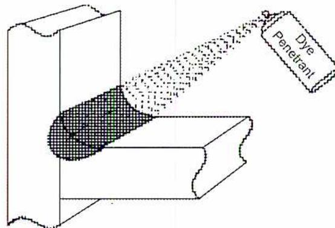
A 3D line drawing of a rectangular part with a horizontal crack. A spray nozzle, labeled 'Dye Penetrant', is shown spraying a fine mist of liquid onto the part. The liquid is shown entering the crack and spreading out on the surface around it. The part itself is shaded with a stippled pattern.
Figure 2
Dye Penetrant
The part to be inspected is clean and dry because any foreign matter could close the cracks or pinholes and exclude the penetrant. Penetrants can be applied by dipping, spraying or brushing with sufficient time allowed for the liquid to be fully absorbed into the discontinuities. This may take an hour or more of very exacting work.
Liquid penetrant inspection is widely used for leak detection. A common procedure is to:
Radiography (X-ray) is one of the most important, versatile and widely accepted of all the non-destructive examination methods. X-ray is used to determine the internal soundness of welds.
Radiography is based on the ability of X-rays and gamma rays to pass through metal and other materials opaque to ordinary light and produce photographic records of the transmitted radiant energy. All materials absorb known amounts of this radiant energy. Therefore, X-rays and gamma rays can be used to show discontinuities and inclusions within the opaque material. The permanent film record of the internal conditions shows the basic information that determines weld soundness.
High-voltage generators produce x-rays. As the high voltage applied to an x-ray tube is increased, the wavelength of the emitted X-ray becomes shorter and provides more penetrating power.
The atomic disintegration of radioisotopes produces gamma rays. The radioactive isotopes most widely used in industrial radiography are Cobalt 60 and Iridium 192. Gamma rays emitted from these isotopes are similar to x-rays except that their wavelengths are usually shorter. This allows them to penetrate to greater depths than X-rays of the same power. However, exposure times are considerably longer due to the lower intensity.
When X-rays or gamma rays are directed at a section of weldment, not all of the radiation passes through the metal. Various materials, depending on their density, thickness and atomic number absorb different wavelengths of radiant energy. The degree to which these materials absorb the rays determines the intensity of the rays penetrating through the material. When variations of these rays are recorded, there is a means of seeing inside the material available. The image on a developed photosensitized film is known as a radiograph (Fig. 3).
The opaque material absorbs a certain amount of radiation, but where there is a thin section or a void (slag inclusion or porosity), less absorption takes place. These areas appear darker on the radiograph. Thicker areas of the specimen or higher density material (tungsten inclusion), absorb more radiation and their corresponding areas on the radiograph are lighter.
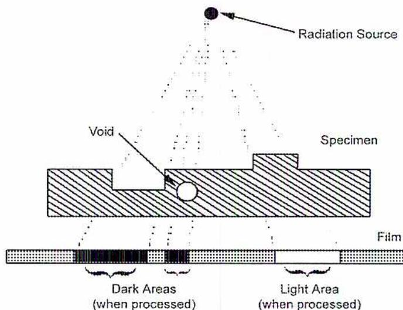
The diagram shows a cross-sectional view of a radiographic setup. At the top, a 'Radiation Source' is depicted as a small black circle. From it, several dashed lines representing radiation rays extend downwards. These rays pass through a 'Specimen', which is shown as a hatched rectangular block. Within the specimen, there is a circular 'Void'. Below the specimen is a 'Film', represented by a long, thin, dotted rectangular strip. The rays that pass through the void in the specimen reach the film and create 'Dark Areas (when processed)'. The rays that pass through the solid parts of the specimen are attenuated and create a 'Light Area (when processed)' on the film.
Figure 3
Radiograph
The reliability and interpretive value of radiographic images are a function of their sharpness and contrast. The sharpness of an image and its contrast with the background enables the observer to detect a flaw. To be sure that the radiographic exposure produces acceptable results, a gauge called an Image Quality Indicator (IQI) is placed on the part so that its image is produced on the radiograph.
Image quality indicators, used to determine radiographic quality, are also called penetrameters. A standard hole-type penetrameter is a rectangular piece of metal with three drilled holes of set diameters. The thickness of the piece of metal is a percentage of the thickness of the specimen being radiographed. The diameter of each hole is different and is a given multiple of the penetrameter thickness. A penetrameter is not an indicator or gauge to measure the size of a discontinuity or the minimum detectable flaw size. It is an indicator of the quality of the radiographic technique.
Surface defects show up on the film and must be recognized. Because the angle of exposure also influences the radiograph, it is difficult or impossible to evaluate fillet welds using this method. Because a radiograph compresses all the defects that occur throughout the thickness of the weld into one plane, it tends to give an exaggerated impression of scattered-type defects such as porosity or inclusions.
An x-ray image of the interior of a weld can be viewed on a fluorescent screen as well as on developed film. The screen makes it possible to inspect parts faster and at lower cost than with film. Linking the fluorescent screen with a video camera overcomes many of the shortcomings of radiographic imaging. Instead of waiting for film to be developed, the images are viewed in real time. This improves quality and reduces costs on production applications, such as pipe welding, where a problem can be identified and corrected quickly.
Radiographic equipment produces radiation that is harmful to body tissue in excessive amounts, so safety precautions are followed closely. All instructions are followed carefully to achieve satisfactory results. Only personnel who are trained in radiation safety and qualified as industrial radiographers are permitted to do radiographic testing.
Ultrasonic inspection (Fig. 4) is a method of detecting discontinuities. A high-frequency sound beam, at an angle of about \( 70^\circ \) , is directed through the base plate and weld on a predictable path. These sound waves pass through the material bouncing off the inner and outer walls. A defect reflects part of the sound back to the source (a quartz crystal transducer). The sound pulses are shown on an oscilloscope together with the reflected signal from the defect.
When the sound beam's path strikes an interruption in the material continuity, some of the sound is reflected back. The instrument collects the sound which is then amplified and displayed as a vertical trace on a video screen.
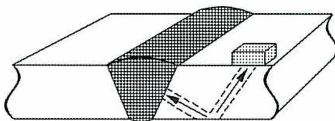
A cross-sectional diagram of a metal plate with a weld bead. A shaded, fan-shaped region represents the ultrasonic sound beam entering from the top left. The beam travels through the base metal, reflects off the bottom surface, and then reflects off the weld bead. A dashed line with an arrow indicates the reflected signal returning to the source. A small rectangular block is shown on the top surface of the weld.
Figure 4
Ultrasonic Inspection
Both surface and subsurface defects in metals are detected, located and measured using ultrasonic inspection, including flaws too small to be detected with other methods. The ultrasonic unit contains a crystal of quartz or other piezoelectric material encapsulated in a transducer or probe. When a voltage is applied, the crystal vibrates rapidly. As an ultrasonic transducer is held against the metal to be inspected, it imparts mechanical vibrations of the same frequency as the crystal through a couplant material into the base metal and weld. The couplant transfers the ultrasonic waves better than air does. For relatively flat, smooth surfaces, a mixture of glycerin and water may be used as a couplant. For rough surfaces, light motor oil with a wetting agent may be used. Waves are propagated through the material until they reach a discontinuity or change in density.
At these points (discontinuities) some of the vibration energy is reflected back. As the current that causes the vibration is shut off and on at 60-1000 times per second, the quartz crystal intermittently acts as a receiver to pick up the reflected vibrations. This causes pressure on the crystal and generates an electrical current. Fed to a video screen, this current produces vertical deflections on the horizontal base line. The resulting pattern on the face of the tube represents the reflected signal and the discontinuity.
Compact, portable ultrasonic equipment is available for field inspection and is commonly used on bridge and structural work as well as for checking the thickness of piping.
Ultrasonic testing is not as suitable as other NDE methods for determining porosity in welds because round gas pores respond to ultrasonic tests as a series of single-point reflectors. This results in low amplitude responses that are easily confused with "base line noise" inherent with testing parameters. However, it is the preferred test method for detecting common types of discontinuities and laminations.
Portable ultrasonic equipment is available with digital operation and microprocessor controls. These instruments may have built-in memory and provide hard copy printouts or video monitoring and recording. They are interfaced with computers which allow further analysis, documentation and archiving, much as with radiographic data. Ultrasonic examination requires expert interpretation from highly skilled and extensively trained personnel
Leak testing, to verify the integrity of a piping system, is performed in accordance with ASME B31.1 Power Piping Code. The testing methods, most widely used, are:
It is mandatory that the design, fabrication, and erection of power piping, constructed under this ASME Code demonstrate leak tightness. A hydrostatic leak test prior to initial operation meets this requirement. A non-compressible liquid, such as water, is usually the test medium used. Water is inexpensive and readily available. A glycol/water mixture or methanol is used if the testing is performed when the ambient temperature is near or below freezing.
The hydrostatic test pressure of a piping system is not less than 1.5 times the design pressure, but does not exceed the maximum test pressure of any vessels or components in the piping system. The test pressure is maintained for sufficient time to inspect all joints, with a minimum time of ten minutes.
Hydrostatic testing is the preferred method because it is very safe. Liquids are not compressible. When a leak occurs, the pressure is gone. Compressible fluids continue to expand, creating a safety hazard.
Pneumatic testing of piping systems involves the pressurization with a compressible gas, such as air or nitrogen. Air is an inexpensive and readily available test medium. Nitrogen is selected if there is the possibility of combustible gases being present. This
type of test is only used when the design of piping systems does not allow the complete removal of water.
The primary hazard with compressed gases is the amount of stored energy contained. The results are catastrophic if a failure occurs. Pneumatic testing is done with all nonessential personnel removed from the immediate area.
TOFD is a type of ultrasonic inspection that uses diffraction signals instead of reflection signals. The TOFD technique is an effective, fully computerized inspection method for the detection and sizing of flaws with a high rate of accuracy. The location, geometry or orientation of the anomalies is irrelevant for detection and sizing. In the TOFD technique, a transmitter and a receiver are placed equal distances from the weld. The scanner with the probes is moved parallel to the weld.
TOFD is utilized over the entire length of the weld to classify inherent flaws and creep damage. The small, high intensity beam spot used in this inspection is effective in detecting creep damage due to an early form of cavitation.
Fig. 5 shows the typical TOFD arrangement for the detection of deep-seated damage, with the probes set broadly. The intersection point of the beam centres lies at a depth of approximately \( 2/3 \) wall thickness. This inspection is done in a single scan pass with transducers straddling the weld.
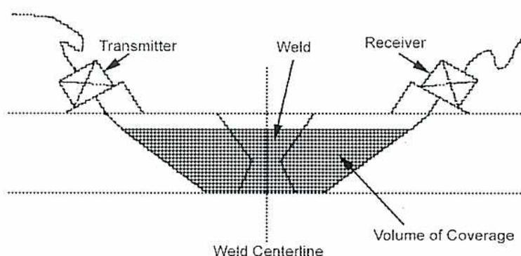
The diagram illustrates the TOFD transducer configuration for deep coverage. It shows a cross-section of a pipe wall with a vertical dashed line representing the 'Weld Centerline'. On the left, a 'Transmitter' probe is positioned on the surface, and on the right, a 'Receiver' probe is positioned. Both probes emit and receive ultrasonic beams that converge at a point labeled 'Weld'. The area between the beams is shaded and labeled 'Volume of Coverage'. The intersection point of the beam centres is shown to be at a depth of approximately \( 2/3 \) wall thickness.
Figure 5
TOFD Transducer Configuration for Deep Coverage
Describe a typical routine inspection procedure and schedule for high-energy piping.
High-energy piping includes main steam and hot reheat piping systems designed to operate at high temperatures and pressures. Main steam piping has design temperatures between 510°C and 565°C and operating pressures between 8.6 MPa up to supercritical. Hot reheat piping systems operate between 510°C and 565°C but at lower pressures than the main steam piping. For example, a Combustion Engineering steam generator with a main steam pressure of 17.4 MPa has a reheat pressure of 4.05 MPa.
The ASME B31.1 Power Piping Code prescribes recommended practices for the inspection of high-energy piping systems. High-energy piping systems, part of the feedwater and steam circuit of a steam generating power plant, include runs of piping and supports, restraints and all valves. This also includes all systems under two-phase flow conditions. A record keeping program is developed to analyze piping system distortions and potential failures.
The following procedures are established and implemented:
Written procedures include the qualifications of personnel and material history and records.
Each plant files and maintains the following documentation:
The piping and pipe support inspection program identifies the initial hanger positions at the time of installation and unit startup. Routine visual surveys are scheduled to identify any changes in position of piping and setting of pipe hangers, slide supports and shock suppressors.
Attaching markings or pointers to the piping components allows for periodic position determinations and permanent identification. These observations include:
Procedures are developed for corrosion control and evaluation of the piping components for corrosion damage. These procedures include the periodic visual inspection of the following:
Check superheater and reheat piping for signs of creep. This is done after a period of operation such as 10, 15 or 20 years. Samples of metal are taken for metallurgical inspection or lengths of pipe are measured to detect increase in length.
Explain the effects of high temperature on piping strength.
Piping in power plants and process plants is often subjected to high operating temperatures. The operating temperature has an effect on the tensile strength of the metal and may also cause creep.
As the temperature is increased, the properties of the pipe material change. The tensile strength of the material rapidly decreases above a certain temperature. This is indicated in Table 1A of the ASME Code, Section II, Part D. For materials listed in this table, the working stress allowed decreases as the temperature increases. For example, steel pipe of material SA-53B is allowed a working stress of 103 425 kPa at 343°C. But, at a temperature of 427°C, the working stress allowed is only 74 466 kPa.
The ultimate strength of carbon steel and a number of alloy steels as determined by short time tensile strength tests over a temperature range of 38°C to 816°C is shown in Fig. 6. The results of these tests indicate that the strength decreases with an increase in temperature. There is a temperature region for the austenitic alloy steels between 204 and 482°C where the strength is fairly constant. The strength of carbon and many low alloy steels increases between the ranges of 38 to 316°C.
![Figure 6: Tensile Strength of Various Steels. A line graph showing the relationship between Stress (in 1000 psi and MPa) and Temperature (in F and C) for different types of steel. The y-axis ranges from 0 to 100 (136) MPa, with major ticks at 20 (27), 40 (54), 60 (81), 80 (108), and 100 (136). The x-axis ranges from 0 (-18) to 1600 (871) F, with major ticks at 0 (-18), 400 (204), 800 (427), 1200 (649), and 1600 (871). Four curves are shown: 'Upper Limit Austenitic Alloy' (solid line), 'Lower Limit Austenitic Alloy' (dashed line), 'Upper Limit Ferritic Alloy' (solid line), and 'Lower Limit Ferritic Alloy' (dashed line). A label '0.10 to 0.20 C Carbon Steel' points to the lower limit ferritic alloy curve.](97f61e67792478fb6ce089868e503063_img.jpg)
Figure 6
Tensile Strength of Various Steels
In addition to immediately reducing the tensile strength of a material, high temperatures cause the pipe material to creep . This is a condition where the pipe material gradually stretches or undergoes plastic deformation. This occurs if the material is subjected to stress under high temperature and can become a long term gradual decrease in tensile strength. Eventually the material will fail if the stress at the elevated temperature is maintained for a sufficient length of time. For power plant piping, an elongation or stretching rate of 1 percent in 100 000 hours is considered acceptable.
To determine the rate of creep of a material, a creep test is conducted. A specimen of the material is held at constant temperature in a furnace and, using a system of levers, a deadweight is applied. The deformation of the specimen is measured periodically throughout the test and a curve is plotted showing the percent creep throughout the time of the test.
Fig. 7 shows the creep curves for a material tested at low stress and at high stress. The rate of creep is divided into three stages. During the first stage, the creep rate decreases (the slope of the curve decreases). During the second stage, the rate is constant (the slope of the curve does not change). During the third stage, the rate increases (the curve slope becomes steeper) until the specimen ruptures.
Another adverse effect of high temperature on pipe material is that it promotes oxidation and corrosion. A low carbon steel heated in air for a certain period experienced over 50 times as much oxidation at \( 816^{\circ}\text{C} \) as it did when heated for the same period at \( 538^{\circ}\text{C} \) .
In addition to the above problems, if the operating temperature of the pipe is high, then the pipe expands when coming up to that temperature. Movement of the pipe due to expansion is allowed for when installing the pipe.
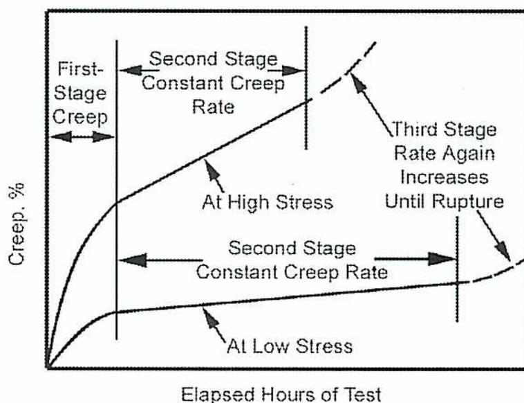
The graph plots 'Creep, %' on the vertical axis against 'Elapsed Hours of Test' on the horizontal axis. Two curves are shown, one for 'At High Stress' and one for 'At Low Stress'. Both curves start at the origin and initially curve downwards, labeled as 'First-Stage Creep'. They then transition into a linear 'Second Stage Constant Creep Rate'. The high stress curve eventually curves upwards sharply, labeled 'Third Stage Rate Again Increases Until Rupture', while the low stress curve remains relatively flat for a much longer duration before showing a slight upward trend.
Figure 7
Typical Creep Curves
Describe the design and installation criteria for a piping system layout.
Piping systems, used to transfer fluids such as water, steam, oil, gas and air from one location to another, must include:
Piping is supported so that the equipment to which it is attached does not carry the weight of the piping. The supports used prevent excessive sagging of the pipe and, at the same time, allow free movement of the pipe due to expansion and contraction. However, unlike a pipe guide, the pipe support does not control the direction of the pipe line movement.
The supporting arrangement is designed to carry the weight of the pipe, valves, fittings and insulation plus the weight of the fluid contained within the pipe.
Fig. 8 illustrates two types of adjustable pipe hangers which are suspended from overhead beams. Fig. 8 (a) shows an adjustable strap hanger while Fig. 8 (b) illustrates an adjustable roller hanger.
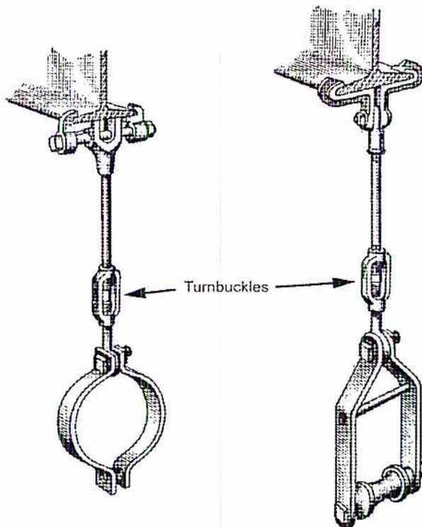
Figure 8
Pipe Hangers
The roller stands in Fig. 9 may be bolted to brackets, structural supports and floors. Four adjustment screws which raise or lower the roller the pipe rests on control the vertical adjustment of the pipe position in the adjustable stand..
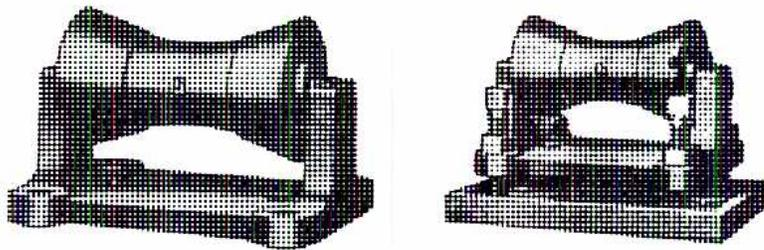
Figure 9
Pipe Roller Stands
In the case of a horizontal pipe where the action of other parts of the piping system causes vertical movement, the rigid type hangers or supports in Figs. 8 and 9 are not suitable. In this situation, variable spring hangers are used permitting the pipe to move up or down without disturbing the load distribution. Fig. 10 shows a type of a variable spring hanger.
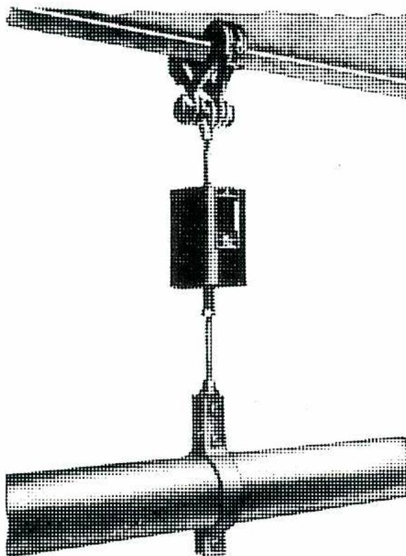
Figure 10
Variable Spring Hanger
If the amount of vertical movement of the supported pipe is large, then a constant support hanger (Fig. 11) is used. This type features a coiled helical spring which is arranged to move as the pipe moves and maintains a constant supporting force on the spring. Roller bearings with sealed lubrication are used to reduce friction between the moving parts of the hanger.
The constant support hanger is factory adjusted and tested to support the specified load throughout a definite range of travel. The spring compression can be adjusted in the field to give a plus or minus 10% variation in the load setting.
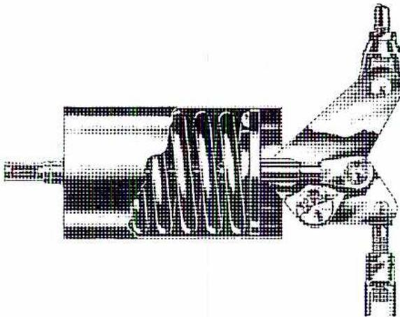
Figure 11
Constant Support Hanger
Expansion control in pipelines that carry hot or cold fluids or are exposed to large variations in ambient temperature can be a major problem. As the metal temperature of the pipe increases or decreases, its length also varies due to thermal expansion or contraction. Therefore, unless provision is made for these changes in length, excessive stresses are induced in the piping and large forces are transmitted through the system to anchors and connected equipment.
Several different methods are available for controlling pipeline expansion. Two of the most common are:
With this method, the pipe is fabricated with special bends or loops. Flexing or springing of the bends or loops takes up the increase due to expansion in the length of pipe. Fig. 12 shows some typical shapes of expansion bends. Length and height dimensions are used to install the bend that will withstand the required amount of expansion.
![Figure 12: Expansion Bends. The figure shows five diagrams of pipe expansion bends: 1. L-BEND: A 90-degree bend with vertical leg H and horizontal leg W. 2. Z-BEND: A Z-shaped bend with vertical legs h and H, and horizontal leg W. 3. U-BEND: A U-shaped bend with vertical legs h and H, and horizontal leg W. 4. SYMM. LOOP: A symmetric loop with height H, width W, and a 180-degree bend U = U, marked with a dashed line of symmetry. 5. GUIDED LOOP: A guided loop with height H, width W, and a 180-degree bend U = U, constrained between two guides with a total width U'.](1df14e8a75f3f3fcf750749dbbd2c3f1_img.jpg)
Figure 12
Expansion Bends
Advantages of expansion bends are:
Disadvantages of expansion bends are:
Two types in use are:
This type, illustrated in Fig.13, features a slip pipe which is welded to an adjoining pipe. The slip pipe fits into the main body of the joint which is fastened to the end of the other adjoining pipe. When the pipe line expands, the slip pipe moves within the joint body. To prevent leakage between the slip pipe and the joint body, packing is used around the outside of the slip pipe and the slip pipe moves within the packing.
In the joint illustrated, the packing consists of two sections of packing separated by a section of plastic packing. Additional plastic packing may be added using a packing plunger while the joint is in service. Grease fittings are used to provide lubrication.
![A cross-sectional diagram of a slip expansion joint. The diagram shows a central sliding sleeve within a larger cylinder. Labels with leader lines point to various components: 'Limit Stop' at the left end of the cylinder, 'Sealing Packing' on both sides of a central 'Plastic Packing' section, 'Cylinder' for the main housing, 'Plunger' for the packing insertion tool, 'Gland' for the packing retention assembly, and 'Lubrication Fitting' at the bottom. The 'Sliding Sleeve' is the inner tube that moves relative to the cylinder.](dc1e692e5b7efd8e5a2a790c458646d9_img.jpg)
Figure 13
Slip Expansion Joint
Advantages of slip expansion joints are:
Disadvantages of slip expansion joints are:
A simple design suitable for only low pressures is illustrated in Fig.14 and is available with either flanges or welding ends. This type of expansion joint has a flexible corrugated section which can absorb a certain amount of endwise movement of the pipe. They are often seen at the exhaust end of a steam turbine.
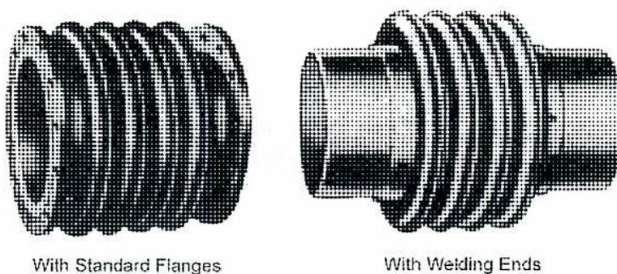
With Standard Flanges With Welding Ends
Figure 14
Low Pressure Corrugated Expansion Joint
For higher pressures, the corrugated joint uses control or reinforcing rings which surround the corrugations as illustrated in Fig. 15.
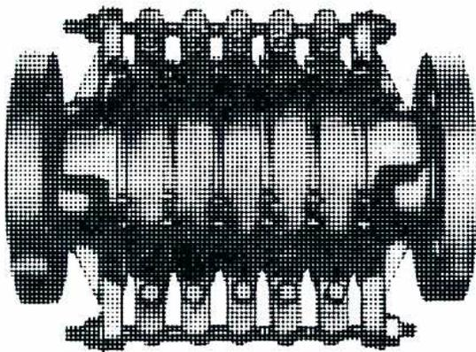
Figure 15
Reinforced Corrugated Expansion Joint
The bellows type corrugated expansion joint, shown in Fig. 16, is suitable for pressures up to 2070 kPa. It is equipped with an internal safety sleeve with a limit stop to prevent undue extension or compression. Because this sleeve is closely fitted, it prevents excessive leakage if failure of the bellows section occurs. This type may be supplied with or without anchor bases.
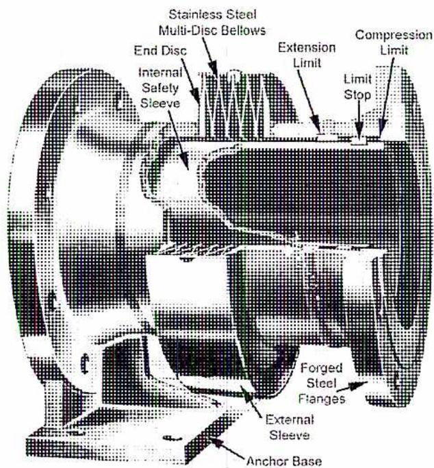
Figure 16
Bellows Type Corrugated Expansion Joint
Advantages of corrugated expansion joints are:
Disadvantages of corrugated expansion joints are:
Fig. 17 illustrates the various different designs of bellows or corrugations.
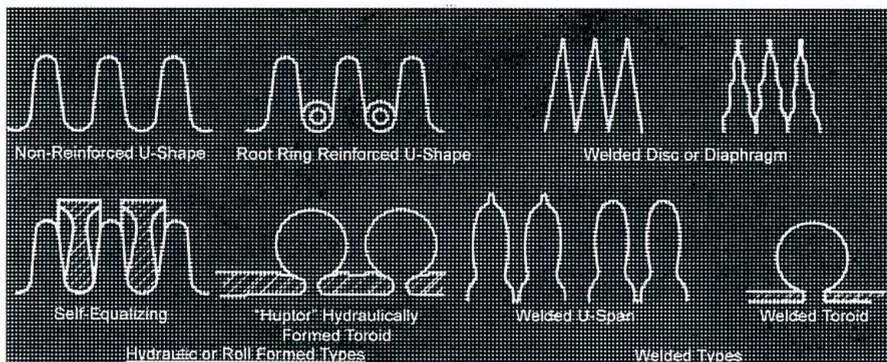
Figure 17
Types of Bellows
Cold springing or pre-stressing of a piping system is applied to reduce the effect of thermal expansion in the piping system. Leaving a gap at an appropriate location in the piping system and "pulling up cold" during the erection/installation of the piping achieves this. Cold pull, usually 50% of the expansion of the pipe run under consideration, has no effect on the code stress but can be used to reduce the nozzle loads on machinery or vessels.
Cold springing introduces a predetermined stress in the pipe and reduces the maximum thermal loads and stresses in a system when the pipe is cold. Its main purpose is to reduce the peak loading on connecting equipment. However, it does not affect the overall stress range, and therefore cannot be used in the stress range equations. In piping systems well below the creep range, any cold spring should stay for life. Pipes in the creep range eventually fully relax out, so they become 100% cold sprung regardless of how much is applied at original build stage. Some codes make use of cold spring to reduce the maximum hot stress (deadweight + pressure + thermal expansion).
Cold spring is used to:
If 25 mm of cold spring is installed and the hanger is moved -25 mm from its neutral position and in the hot position it is +25 mm from the neutral position, then the rod can half the length and still be within the 4 degree limit.
If the hanger offsets more than 4 degrees, the uplift becomes a factor and induces more load and stress at the hanger point and possibly at equipment connections.
Good judgment is necessary when applying cold spring. The cold spring becomes a vital part of the design. Extra precautions and field verifications are used when actually installing the pipe to ensure that the cold spring is installed as designed.
Anchors are important in any piping system but there are some special considerations necessary when expansion joints are used. No expansion joint operates properly unless the pipeline is securely anchored. In addition, the pipeline has enough guides or supports to prevent buckling or bowing of the pipe.
When guides are installed near an expansion joint they hold the pipe in the proper position for best operation of the joint. With the slip type joint, this prevents misalignment of the sleeve in the joint. With the bellows type joint, the guides prevent excessive stress on the bellows which results from misalignment of the pipe.
A pipe alignment guide is a form of sleeve or framework, fastened to a rigid part of the installation, which permits the pipe to move freely in one direction only, along the axis
of the pipe. It allows sufficient clearance between the fixed and moving parts to give proper guidance without excessive friction.
Anchors are installed to:
With expansion joints, anchors serve to divide the system into sections, so that each expansion joint absorbs only the expansion of its own section.
If only one expansion joint is used, it is placed in the middle of the pipeline. If it is not fitted with an anchor, the line is anchored at each end. If the single joint is fitted with an anchor then it is placed at the end of the line.
When several expansion joints are used in a pipe line, the pipe may be anchored midway between the joints or at the joints themselves if they are fitted with anchor bases.
All piping systems that have a possibility of forming liquids need to have provisions for the liquid to drain to low spots. From the low spots, the liquid is removed using traps and low point drains.
Steam traps are automatic valves that discharge condensate from a steam line without discharging steam. Steam traps are an essential part of a steam system. Without them the steam pipes and heat exchangers quickly fill with condensate that prevents the flow of steam and transfer of heat. Steam traps are placed along distribution piping and after all heat exchangers.
There are four types of steam traps:
In inverted bucket traps (Fig. 18), steam is contained within an inverted bucket floating in condensate. As the level of condensate rises, it is discharged. Inverted bucket traps require water, called the prime, within the bucket to operate. This trap is most appropriate for steady loads such as on distribution systems. Condensate is discharged intermittently.
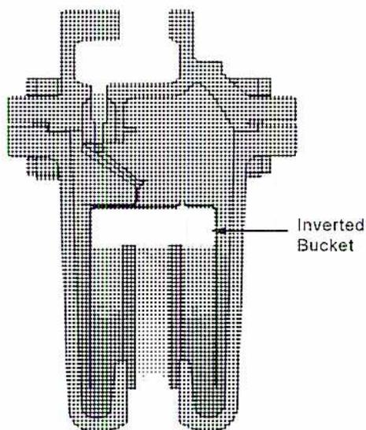
Figure 18
Inverted Bucket Trap
Courtesy of Spirax Sarco
In float and thermostatic traps (Fig. 19), condensate is discharged when the rising level of condensate lifts a float attached to a level valve. A thermostatically operated vent discharges air from the top of the trap. Float and thermostatic traps have superior air removal characteristics. However, the internal valves and seats are matched to steam pressure or the trap can fail in closed position. Condensate is discharged continuously as it collects in the trap body.
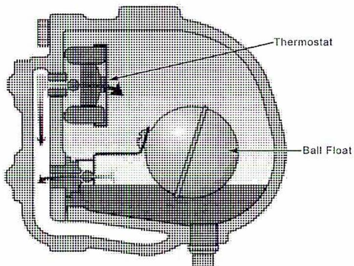
Figure 19
Float and Thermostatic Trap
Courtesy of Spirax Sarco
Thermostatic traps (Fig. 20) operate on the difference in temperature between steam and condensate. When condensate reaches the trap, the filled thermal element opens a pilot valve to allow limited flow. The main valve stays closed until the condensate load exceeds the capacity of the pilot valve. Then the pilot valve opens the main valve, and both discharge at full capacity. At startup, both the pilot valve and the main valve are open for high-capacity discharge of air and condensate. In standard operation, the pilot valve may drain condensate continuously, closing only in the absence of condensate.
Although condensate is discharged continuously, thermostatic traps always cause some condensate to remain in the system so steam is not blown through the trap.
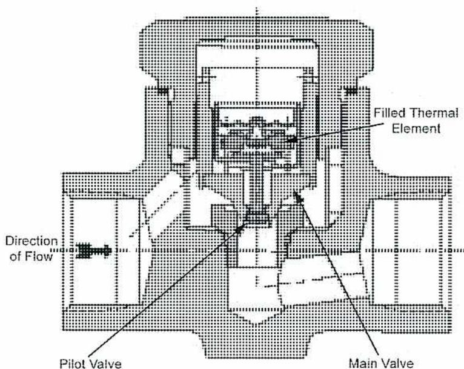
A cross-sectional diagram of a thermostatic trap. The diagram shows a complex internal mechanism within a cast body. On the left, an arrow labeled 'Direction of Flow' indicates the path of the condensate. The internal components include a 'Pilot Valve' at the bottom left, a 'Main Valve' at the bottom right, and a 'Filled Thermal Element' located in the upper central part of the trap. The diagram uses various hatching patterns to distinguish between different parts of the assembly.
Figure 20
Thermostatic Trap
Thermodynamic traps (Fig. 21) have a disk situated on a central orifice. As condensate pressure builds, it lifts the disk, passes through the orifice at the centre of the disk and exits through smaller orifices surrounding the disk. Flash steam builds up pressure on top of the disk and closes the orifice. Condensate is discharged intermittently.
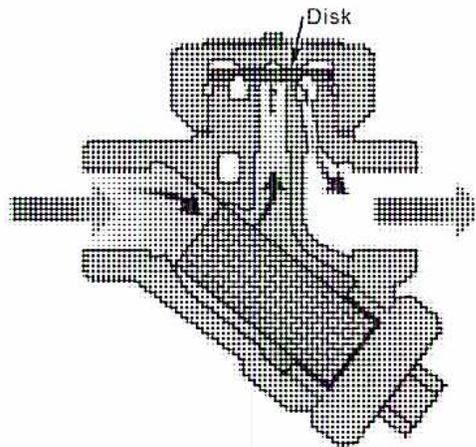
A schematic diagram of a thermodynamic trap. It features a central vertical pipe with a horizontal 'Disk' at the top. Arrows indicate the flow of steam or condensate through the trap's internal components, including a series of pipes and a large, shaded rectangular body.
Figure 21
Thermodynamic Trap
Courtesy of Spirax Sarco
Insulation is materials or combinations of materials that retard the flow of heat energy. Substances with a large number of microscopic air pockets dispersed throughout the material make the most efficient insulators. These extremely small air spaces restrict the formation of convection currents and the air is a poor conductor of heat.
Piping is covered with insulation to:
A material suitable for use as an insulation has the following characteristics:
Thermal conductivity or K value of a material is a way of measuring the quantity of heat that passes through a metre thickness per square metre per time unit with one degree difference in temperature between the faces. The units of measure are watts per square metre per temperature difference ( \( \text{W/m}^2\text{K} \) ).
$$ K \text{ value } (W / m^2K) = \frac{\text{Energy}}{\text{Area} \times \Delta T (^{\circ}K) \times \text{Time}} $$
Thermal conductivity ( \( k \) value) is important in determining a material's ability to resist the flow of heat. The lower the \( k \) factor, the higher the materials insulating power and thus lower overall heat transfer and operating costs. The value of thermal conductivity is used:
The following are types of pipe insulation materials used in commercial and industrial installations:
Diatomaceous silica is combined with a hydraulic binder to form asbestos free block insulation. These items are versatile products available in a range of sizes and thicknesses up to 18 cm. Because of its low thermal conductivity ( \( 0.09 - 0.15 \text{ W/m}^2\text{K} \) ), this type of insulation is an economical, energy saving insulation. It exhibits minimal shrinkage at its \( 1040^\circ\text{C} \) temperature limit, and does not readily decompose even when exposed directly to flame.
Calcium silicate is a granular insulation made of lime and silica reinforced with organic and inorganic fibres and molded into rigid forms. Service temperature range covered is \( 37.8^\circ\text{C} \) to \( 648.9^\circ\text{C} \) .
Calcium silicate insulation has the following features:
Fibreglass insulation is available as flexible blanket, rigid board, pipe insulation and other pre-molded shapes. Service temperature range is \( -40.0^{\circ}\text{C} \) to \( 250^{\circ}\text{C} \) . Thermal conductivity of fibreglass is \( 0.039 - 0.045 \text{ W/m}^2\text{K} \) . Fibreglass is neutral. However, the binder may have a pH factor. It is non-combustible and has good sound absorption qualities.
This is available in board form and can be fabricated into pipe insulation and various shapes. Service temperature range is \( -267.8^{\circ}\text{C} \) to \( 482.2^{\circ}\text{C} \) . Thermal conductivity of cellular glass is \( 0.043 - 0.045 \text{ W/m}^2\text{K} \) .
This product has the following features:
Rock and/or slag wool fibres are bonded together with a heat resistant binder to produce mineral fibres. Upper temperature limit can reach \( 1037.8^{\circ}\text{C} \) . The thermal conductivity of mineral fibre is \( 0.05 \) to \( 0.17 \text{ W/m}^2\text{K} \) . The material has a practically neutral pH, is non-combustible, and has good sound control qualities.
Perlite is made from an inert siliceous volcanic rock combined with water. The thermal conductivity of perlite is \( 0.04 \) to \( 0.06 \text{ W/m}^2\text{K} \) at \( 24^{\circ}\text{C} \) . The material has low shrinkage and high resistance to substrate corrosion. Perlite is non-combustible and operates in the intermediate and high temperature ranges. The product is available in rigid preformed shapes and blocks.
Foamed resins combined with elastomers produce a flexible cellular material. Available in preformed shapes and sheets, elastomeric insulations possess good cutting characteristics and low water and vapour permeability. The upper temperature limit is \( 104.4^{\circ}\text{C} \) . The thermal conductivity of elastomeric insulations is \( 0.036 \text{ W/m}^2\text{K} \) . Elastomeric insulation is cost efficient for low temperature applications with no jacketing necessary.
Insulation produced from foaming plastic resins creates predominantly closed cellular rigid materials. "K" values decline after initial use as the gas trapped within the cellular structure is eventually replaced by air. Foamed plastics are light weight with excellent moisture resistance and cutting characteristics. The chemical content varies with each manufacturer. Available in preformed shapes and boards, foamed plastics are generally used in the low and lower intermediate service temperature range -182.8°C to 148.9°C. The thermal conductivity of elastomeric insulations is 0.03 - 0.04 W/m 2 K.
Refractory fibre insulations are mineral or ceramic fibres, including alumina and silica, bound with extremely high temperature binders. The material is manufactured in blanket or rigid form. Temperature limits reach 1648.9°C. The thermal conductivity of refractory fibre insulations is 0.019 - 0.038 W/m 2 K. The material is non-combustible.
Cements may be applied to high temperature surfaces. Finishing cements or one-coat cements are used in the lower intermediate range and as a finish to other insulation applications. The thermal conductivity of refractory fibre insulations is 0.011 - 0.022 W/m 2 K. Operating temperature limits reach 982.0°C.
This is a new type of insulation constructed of metal reflective sheets of stainless steel, spaced and baffled to form isolated air chambers around the piping. The highly polished reflective sheets reflect the heat and prevent loss due to radiation but absorb little heat through conduction. The k factor varies from 0.53 to 0.66 W/m 2 K.
The following indicates the general application of various piping insulations for different temperature ranges:
The effectiveness of a particular insulation is expressed as an efficiency \( E \) where:
$$ E = \frac{\text{Heat loss from bare pipe} - \text{heat loss from insulated pipe}}{\text{heat loss from bare pipe}} $$
The heat losses are expressed in kJ/h/linear metre. Piping insulation is usually fabricated in half-cylindrical sections for fitting over the pipe. The sections are held together with metal wire or bands and then a surface finish, usually a canvas type, is applied. Special shapes and arrangements of insulation are used for fittings such as elbows, flanges, and valves such as shown in Fig. 22.
![Figure 22: Insulation of Fittings. This figure contains three diagrams illustrating the insulation of different pipe fittings. The top-left diagram shows an 'Elbow' with 'Pipe Insulation' segments. Labels indicate 'Segments Cut from Sectional Pipe Insulation (Note First and Last Segment Extended Over Weld Bead)' and 'Locate Expansion Joint Within 3 ft of Fitting Insulation'. The top-right diagram shows a 'Flange' with 'Pipe Insulation', a 'Flange Cover Cut from Pipe Insulation', and 'Filling Collars'. The bottom diagram shows a 'Valve' with 'Pipe Insulation', a 'Top Cover', and a 'Bonnet and Flange Cover'.](662933fe00899933b36b5a214ac6095c_img.jpg)
Figure 22
Insulation of Fittings
Explain the theory and effects of water hammer.
Water hammer is a series of hammer blow-like shocks produced by a sudden change of velocity of water or other liquid flowing within a pipeline. These shocks may have sufficient magnitude to rupture the pipe or pipe fittings or to damage connected equipment.
The sudden change of velocity necessary to produce water hammer may be caused by the following:
In the case of a valve being quickly closed in a pipeline through which water is flowing, the first effect is the sudden decrease in the velocity of the water and a corresponding increase in pressure at the valve. This causes a pressure wave to travel back upstream to the inlet end of the pipe where it reverses and surges back and forth through the pipe, getting weaker with each successive reversal. This pressure wave due to water hammer is in addition to the normal water pressure within the pipe and depends upon the magnitude and rate of change in velocity. Complete stoppage of flow is not necessary to produce water hammer as any sudden change in velocity may bring it about to some degree depending upon the above conditions.
Where too rapid closing of a valve is the cause of the water hammer, the remedy is to ensure that the valve is closed slowly. The period of effective closing of a gate valve takes place in the last 20% of the valve travel and this portion is undertaken as slowly as possible. If the valve is equipped with a bypass, the bypass is opened to equalize the pressure on both sides of the valve. The bypass valve is closed after the main valve has been closed.
When opening a gate valve, the first 20% of the valve travel is the most critical portion. If so equipped, the bypass should be opened to allow for pressure equalization. Then the main valve is opened as slowly as possible. As a general rule, all valves are opened and closed slowly and cautiously.
When water hammer is due to the sudden stopping of a motor-driven pump due to a power failure, the pressure drops at the pump discharge. The water in the discharge line stops and then reverses direction. Subsequent rapid closing of the check valve at the pump causes severe shock when the energy of the reverse flow is violently expended against the check valve disc.
A pump trip may also cause water hammer in the pump suction line in cases where the water flows to the pump through a long line by gravity or under pressure from another pump.
The maximum intensity of the wave can be calculated using Joukowski's Law:
$$ H_{wh} = \frac{cv}{g} $$
Where:
| \( H_{wh} \) | = | head of water hammer, m |
| \( c \) | = | velocity of sound in the liquid, m/s |
| \( v \) | = | instantaneous velocity change in liquid (m/s) |
| \( g \) | = | acceleration due to gravity, 9.81 m/s 2 |
A pump delivers water to a tank 75 m above the pump. During a power failure, the pump discharge check valve gets stuck in the open position for a few moments and then slams shut. Before the check valve closes, water begins to flow backwards through the pump with a velocity of 15 m/s. If the speed of sound in water is 1469 m/s at 15.6°C, what is the water hammer head produced?
$$ \begin{aligned}H_{wh} &= \frac{cv}{g} \\H_{wh} &= \frac{1469 \text{ m/s} \times 15 \text{ m/s}}{9.81 \text{ m/s}^2} \\H_{wh} &= 2246.18 \text{ m}\end{aligned} $$
A water hammer surge of 2246.18 m, added to the normal running head of 75 m, would create a total head of:
$$ 2246.18 + 75 = 2321.18 \text{ m} $$
Converting this head to pressure:
$$ \text{Pressure} = \rho gh $$
$$ \text{Pressure} = 1000 \text{ kg/m}^3 \times 9.81 \text{ m/s}^2 \times 2321.18 \text{ m} $$
$$ \text{Pressure} = 22\,770\,776 \text{ N/m}^2 $$
$$ \text{Pressure} = 22\,770\,776 \text{ Pa} $$
$$ \text{Pressure} = \mathbf{22\,771 \text{ kPa}} \text{ (Ans.)} $$
This may be sufficient to destroy any weak point in the system. The above example is for instantaneous closing. If the valve closing time is increased, the shock wave is greatly decreased. Devices which can be used to reduce the shock in a pump discharge line are air chambers, relief valves or check valves with a built-in dashpot to prevent rapid closing of the disc.
In the case of a steam line, water hammer may occur if condensate is present in the line. As the steam passes through the line above the surface of the condensate it may raise up behind it a mass of the condensate (water). Thus an isolated pocket of steam is formed. Because it is in contact with the cooler water, the steam suddenly condenses and a low pressure is formed in the pocket. Water rushing into this low pressure pocket causes severe shock to the pipe and piping fittings.
Water hammer can also occur in a steam line that is horizontal or pitched upward from the source of steam. It is most violent when a blank or a closed valve dead ends the steam flow in the pipe.
To avoid water hammer in steam lines they are properly pitched and drainage points installed between valves and at pockets in the line where water can accumulate. The drainage points are equipped with drip legs, free-blow drain valves, and traps. In addition, gate valves in the line are not installed with their stems below the horizontal because the valve bonnets act as pockets.
When warming up a steam line all drain valves are opened wide before steam is admitted. The steam admission valve should only be cracked open. If equipped with a bypass, it is slowly opened to pressurize the line on both sides of the main isolation valve. The main valve is slowly and carefully opened fully after the line has been sufficiently warmed up. The drain valves are left open until all of the warm-up condensate has been discharged and drains are blowing dry steam. The trap is then able to handle the condensate that forms under standard operating conditions.